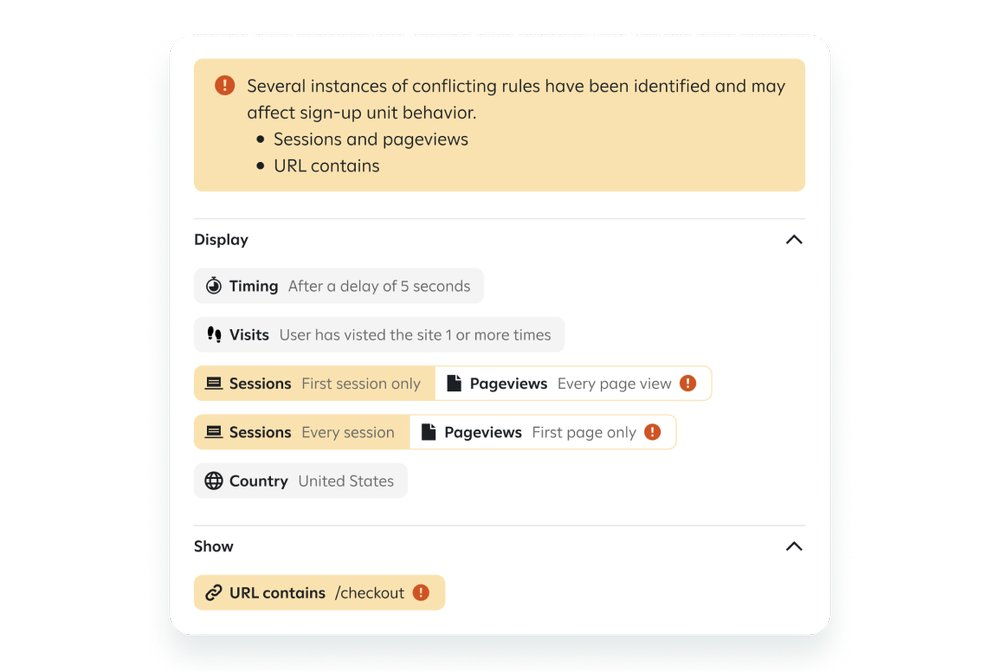
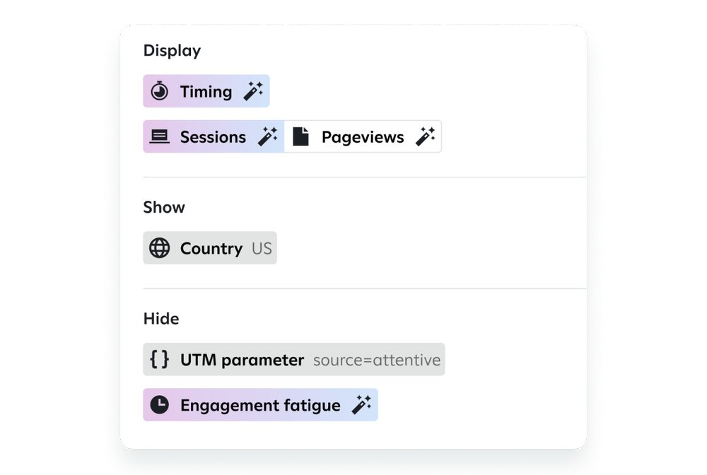
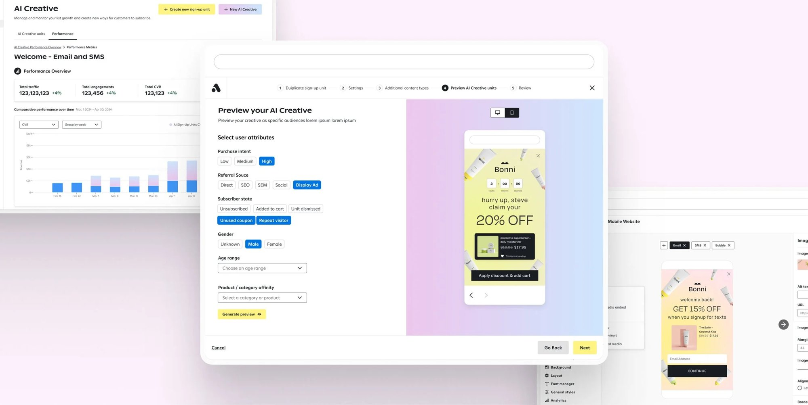
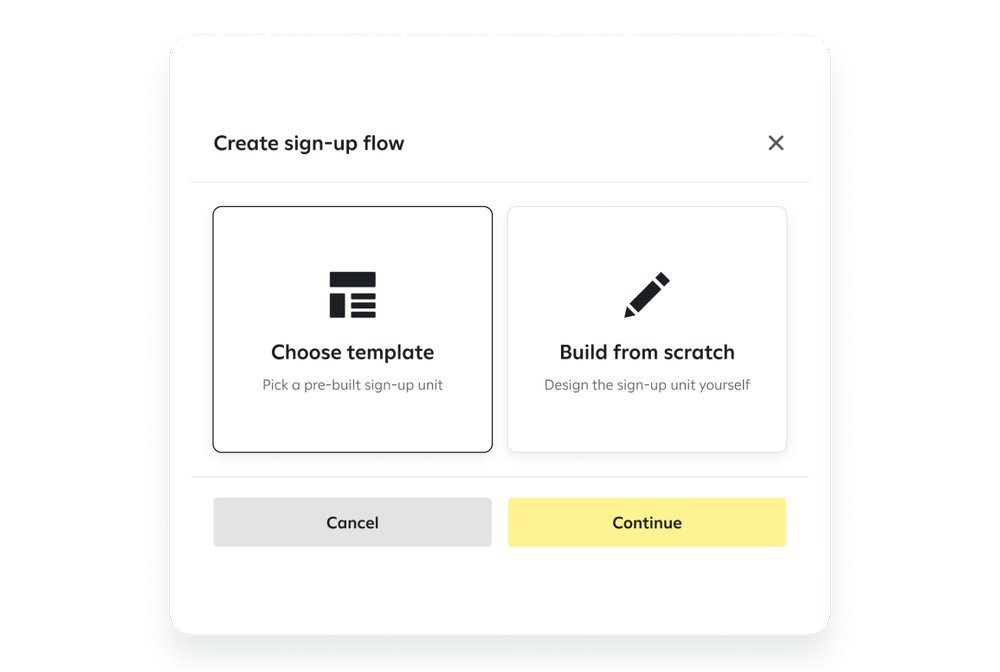
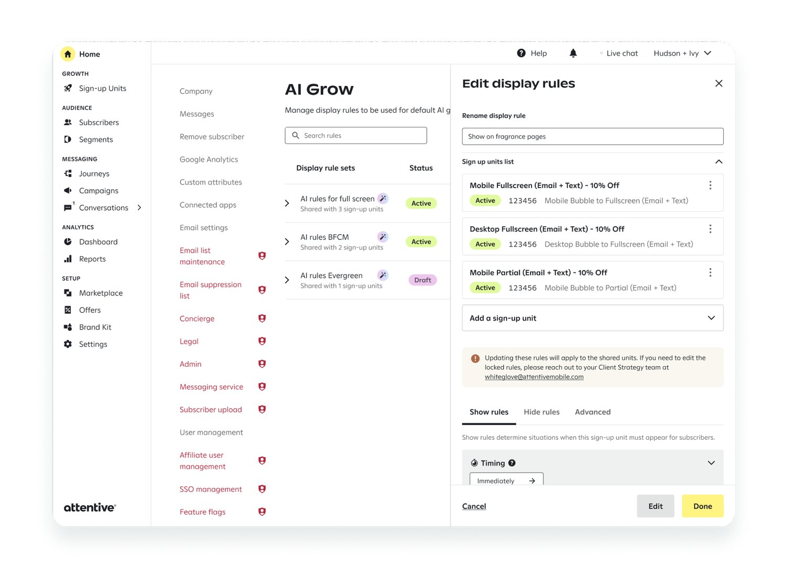
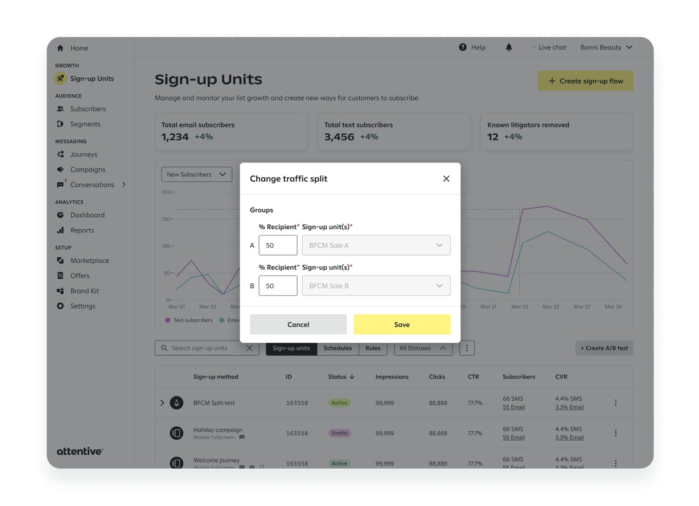
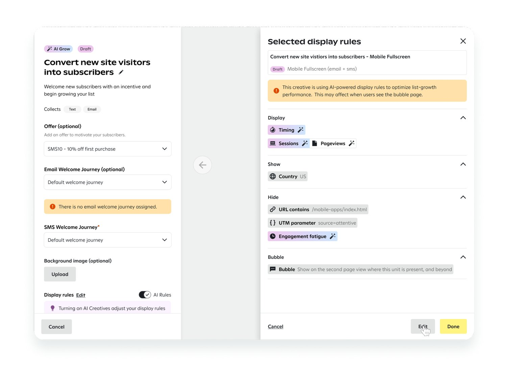

Overview
Attentive helps brands grow SMS and email subscriber lists with personalized sign-up programs. Setting those programs up by hand was slow, and many clients held back because the setup was complex and they worried about intrusive pop-ups. Low adoption meant less engagement, fewer conversions, and lost revenue.
Problem
- Manual setup was inefficient, error-prone, and didn't scale for brands with complex needs.
- Clients struggled to apply best practices and feared intrusive pop-ups.
- Low adoption led to lower engagement, fewer conversions, and lost revenue and retention.

Goals
- Use AI to optimize timing, placement, layouts, and audience-specific incentives.
- Make the tools scalable and data-driven, so every brand can offer personalized experiences.
- Reduce manual effort and make best practices the default.

Projected solution
AI Creatives automates list growth and plugs into the wider Attentive AI ecosystem. It simplifies onboarding, works both hands-on and hands-off, and cuts manual input, which means fewer errors and more time back for Customer Success Managers.

The opportunity
- 13%
- of clients had landing page creatives that would drive significant growth
- 1,000+
- clients weren't using the highest-converting sign-up units
- 70%+
- of clients didn't have the most impactful display rules enabled
The design journey
I started with research into setup inefficiencies, low adoption of best practices, and fears about intrusive pop-ups. Those insights led to an AI-driven concept built on automation, usability, and flexibility. I built personas, user flows, and prototypes, tested them iteratively, and kept monitoring performance after launch.

Iteration 1: shared display rules
Display rules could be shared across multiple sign-up units, cutting redundancy. Client workflows got simpler, but the process still needed a lot of internal involvement. This round focused on modularity and laid the groundwork for deeper automation.

Iteration 2: dynamic adjustments
Clients could change the traffic split during a live A/B test, giving them real-time control. Setting up a test was still limited to CSMs, which showed we needed a fully self-serve A/B testing workflow.

Iteration 3: real-time control
Clients could toggle AI-driven display rule optimization on and off. Those who wanted to set specific parameters still lacked the flexibility, so the next step was balancing automation with user-configurable options.

Results
- +36%
- list growth, from display rules aligned with best practices
- +45%
- welcome revenue, from streamlined offers and lower setup effort
- ~10%
- higher click-through, from more relevant sign-up content
Business impact
Best-practice display rules raised list growth, a key driver of long-term engagement. Simpler offers and setup cut operational effort and sped up time-to-value, and more relevant content improved campaign performance and client satisfaction.